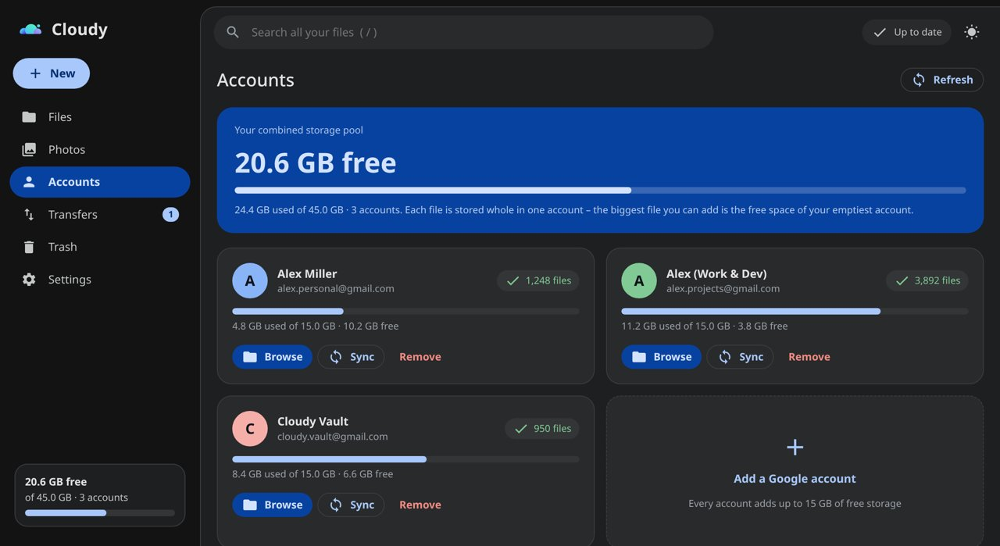

Sheet No. 03 · Field note
Forty-five gigabytes, three logins
Why Cloudy exists, and why the installers were more work than the app.
Every Google account comes with 15GB free. I have three. That's 45GB, which sounds like plenty until you try to find a file you saved two years ago and realise it's in the account you're not currently logged into.
This is a very small problem that produces a very large amount of annoyance. You log out, log in, wait for the security prompt, forget which account owns the folder, log out again. The storage isn't the issue. The seams between the accounts are the issue.
Cloudy is my attempt to remove the seams. One desktop app, one file view, every Google account you've added pooled together. Written in Rust, talking to the Drive API, with the kind of local-first UI that doesn't ask you to open a browser tab to see your own files.
The app was the fun part
The core is not complicated: authenticate each account, list files, normalise the results, show them in one place. Rust makes the boring parts pleasant. The Drive API makes the pleasant parts boring. I spent most of the first version arguing with pagination and file IDs.
What I actually wanted was a view, not a platform. No sync daemon, no virtual filesystem, no clever background magic. If I need a file, I open the app, find it, and download it. That's it. The feature list is short on purpose.

Then the installers
Shipping cross-platform is a promise you make in a README and pay for in a release folder. v0.1.0 went out with an AppImage, a .deb, an .rpm, a Windows installer, an MSI, and a macOS .dmg. Six formats. Six chances to discover that "cross-platform" means six slightly different definitions of where a file is allowed to live.
The app took the interesting weeks. The packaging took the weeks I don't remember. There is no applause for an AppImage that actually runs on someone else's distro, but it is the difference between a repo and a release.
I've started to think of installers as the honesty layer. Anyone can get a binary to run on their own machine. Getting it to run on a machine you've never seen is the actual test.
A download link is a promise. The installer is where you find out if you meant it.
Why v0.1.0
Because it does one thing. It pools storage from multiple accounts and lets you browse it. That's the whole product. Calling it 1.0 would be a lie about maturity, and calling it a beta would be a lie about intent. v0.1.0 is honest: early, usable, and not pretending to be a replacement for Drive.
The next version is mostly about the boring edges: better error messages when a token expires, a clearer transfer queue, and a way to tell which account a file came from without opening it. None of that is exciting. All of it is the difference between a demo and a tool you keep installed.
If you have three accounts and a folder you can't find, it's at aryan007h.github.io/cloudy. Bring your own logins. I don't want them.
— 30 —
— Aryan